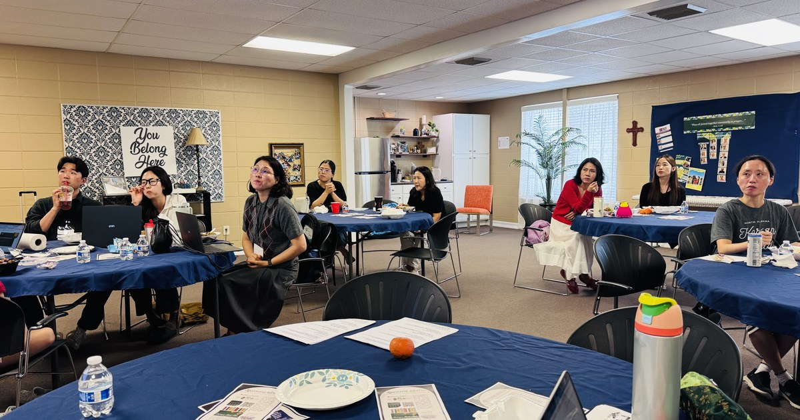

On September 12, after Saturday classes had ended, the teachers of the North Alabama Korean School gathered for a teacher demonstration day. Five teachers presented in turn — those who attended the 44th National Association for Korean Schools conference this summer, and those teaching our classes right now.
This was the gathering we promised when we reported on the conference in August — that what was learned there would be shared with every one of our teachers at the fall-term teachers' meeting. Before the presentations began, one point was emphasized: because every presentation was built out of a class the presenter is actually teaching, all of it can go straight into the classroom, and once the materials are shared, any teacher can reach for them when they are needed.

The first presentation was given by Vice-Principal Lee Owen (이지숙), on the theme "Korean Lessons Extended with AI and Multimedia: Beyond the Classroom, Into Experience." She drew it from the lectures of Assistant Professor Han Hye-min of the Department of Korean Language Education as a Foreign Language at the KFL Graduate School of Hankuk University of Foreign Studies, whose sessions she followed throughout the conference. Professor Han taught students learning Korean as a foreign language in Hong Kong and now continues that work in Korea — a researcher who, as Vice-Principal Lee noted, has taught under the same conditions we do.
Vice-Principal Lee began by naming our circumstances plainly. Class meets only once a week; the range of levels inside a single classroom is wide; and many of our students speak mainly English at home, so chances to use Korean are few. Into those three hours, language, culture, and history all have to fit. Within those limits she set out the role of AI as a bridge to experience — a way of carrying a once-a-week class beyond the classroom. She showed how she builds a sixteen-week lesson plan, and how she makes online word games and sends them to the parents' group chat so students can practise at home with a parent or a sibling. She had deliberately shaped the presentation for the teachers who joined us this term and are planning their first sixteen weeks.
Cho Seung-yeon (조승연) followed with the NKT class, newly opened this term. The NKT measures a student's ability to use Korean in real life across four areas — listening, speaking, reading, and writing — and she explained that she teaches with each student's own growth in view rather than the examination itself. She then handed every teacher a colour-coded sheet, one for beginner classes and one for intermediate, setting out what can be done in those classrooms now so that students arrive ready later: filling a bag and finding information for listening; text messages and advertising posters for reading; thirty-second talks and introducing an object for speaking; newsletters, emails and reviews for writing. Every one of them a subject from ordinary life.
The third presentation was given by Lee Sun-ok (이선옥). Drawing on a lecture on teaching older students in weekend Korean schools, which she heard at the 43rd conference, she first set out six reasons older students drift away from Korean school: the weight of schoolwork and the SAT, ACT and AP courses; the growth of other activities; friends who stop coming one by one; the limited role a student can take on inside the school; too few chances to use Korean day to day; and textbooks that are hard going.
Her answer was to show her own market role-play class from last term, from beginning to end. Students brought things from home, priced them, and sold and bought from one another, haggling with "That's expensive," "Please take something off," "I can't take anything off." The student assistant teachers each took a role and helped carry the lesson. She ran it several more times afterwards so that students who had missed that day could have the same experience. What stays with students, she said, is what they have done with their own hands in the classroom.
In the fourth presentation, Ko Hyun-i (고현이) walked the teachers through making class materials themselves, step by step, with laptops open around the room. Taking Chuseok and songpyeon as her subject, she pulled in sources she had found online, asked for five quiz questions a third-grader could understand, and then had the wording made simpler — all of it live, on screen. She set the method out in three steps: find the source material, state the grade level and the purpose specifically when you ask, and then edit what comes back yourself. Her slides were adapted for our school from the lecture materials of Professor Im Cheol-il of Seoul National University, who gave the keynote at this summer's conference.
She closed with a caution the whole room took note of. When we are teaching Korean history, Korean culture and Hangeul, spelling can come out wrong and mistaken information or images can slip in, so the teacher must check and correct everything at the end.
Finally, Principal Demi Pysh (문동미) showed how she prepares the adult Korean class. She set out, step by step, how she settles on the topic from the textbook and then gathers the proverbs and video clips that belong with it into a single lesson's worth of material, emphasizing that the more specific the request, the better the result suits the students in front of you. She also shared that this term she is concentrating on listening — playing the same passage three times, a little faster each time — because learners who cannot catch what was said will answer something else entirely, and that her students' listening is visibly improving.
The theme of this summer's conference, Principal Pysh told the teachers, was "Korean Schools Growing Together in the Age of AI" — and a new tool does not stand in for a teacher; it makes the lesson a teacher has prepared richer. A lesson students see, touch and hear stays with them longer, and a language becomes one's own only through repeated use. Across five very different presentations, that was the thread they held in common.
This learning will not end as one teacher's experience. The presentation materials are being shared with all of our teachers and go into this fall term's lessons right away, and when one teacher takes another's class, the lesson can carry on from the same materials.
Coming after a full Saturday of teaching, the demonstration day was more than a session on new teaching methods. It was a precious time for teachers walking the same path to look into one another's classrooms and share what they have learned there.
The fall term is already under way. We hope the teaching methods and materials shared at this demonstration day will settle naturally into our classrooms this term, becoming the ground in which our students learn with greater joy and grow with greater confidence.
At the North Alabama Korean School, our teachers will go on learning first and sharing with one another, and we will keep building a school where that learning reaches the classroom.